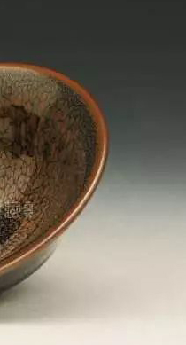

-

刘永森六龙如意宝鼎
此珍品长1500px，宽1500px，高2400px，重60kg。以景泰蓝为主，并与多种工艺巧妙结合，其中主体将军...
-

丁明鸿掐丝珐琅青花三宝
安康，团圆，富贵被称為人生追求的三大梦想，《掐丝珐瑯-青花三宝》三件套便是顺应这个美好寓意而由著名景泰蓝大师丁明鸿...
-
窑神的礼物之鹧鸪斑
“鹧鸪斑”一词在宋代文献中常有出现，如陶谷《清异录》中载：“闽中造盏，花纹鹧鸪斑点，试茶家珍之。”《方舆胜朗》...
-
- 学术推广
- 展览展示
- 高端品鉴
- 市场营销
-

-
学术推广
进行行业内的研讨。对继承传统美术工艺技巧，开拓创新新的技术课题进行学术交流。 行业外的文化传播。激发目前只停留在热烈回味民族文化经典层面的热情。教授艺术品鉴赏知识，引领大众的审美消费观念。
more >

-
展览展示
艺术馆：国艺盛世拥有独立经营的艺术馆，涵盖艺工艺品、传统字画、西方艺术品三个独立展区。供参观观众多了解文化艺术。艺术家：拥有强大的艺术家团队，如沈鹏、刘永森等享受国家特殊津贴的老艺术家，也有行业正当红的年轻艺术家。艺术品则涵盖字画、工艺美术品、实用性工艺品等。 more >

-
高端品鉴
馆内展：定期展出主题性、针对性、专业性强的行业展览。同时邀请行业内的专家演说，传播专业的文化品鉴知识，让观众近距离感受艺术家风采。 巡展：带领艺术家及其作品进行内部品鉴展，服务优质观众。more >

-
市场营销
形成“艺术馆+”“互联网+”、线下营销的经营模式，并意在将此模式在全国进行复制 more >
-

-
胡康美
老师
1952年8月生于湖北襄阳，号鹿门山人。系中国书法家协会副主席。第四届、第五届中国书法家协会理事，第四届中国书法家协会创作委员会委员，第五届中国书法家协会草书委员会副主任委员。全国书法篆刻展、全国兰亭奖展、全国草书展评委。中国书法家协会草书专业委员会副主任，中国书法家协会书法培训中心教授，中国艺术研究院中国书法院特约研究员，中国国家画院沈鹏课题班助理导师，东方九泽龙书画研究协会副主席，中央机关书画协会副主席，中国艺术研究院硕士生导师、博士生导师。中国书法院研究员，中国国家画院书法篆刻院副院长。书法作品被故宫博物院、中国美术馆、人民大会堂等,以及日本、新加坡博物馆或个人收藏。
-

-
沈鹏
老师
1931年出生，江苏省江阴市人。书法家、美术评论家、诗人。中国文学艺术界联合会第十届荣誉委员。1950年起在《人民画报》社工作，曾任人民美术出版社编辑室副主任、总编室主任、副总编辑并兼任编审委员会常务副主任，享受国务院批准的政府特殊津贴，1993年3月当选为第八届全国政协委员。历任中国书法家协会常务理事、副主席、代主席、主席、荣誉主席及艺术品中国荣誉艺术顾问。作品参加2011年8月23日在中国革命军事博物馆开幕的“光荣的使命——全国新闻出版行业书画展”。
做企业的文化营销
Cultural marketing
国艺盛世文化发展有限公司于2107年成立于天津，国艺盛世抓住国家大力发展文化产业的契机，以“渠道领先，内容强势”为战略方向。不断扩充整合艺术家资源以艺术品购销网络和文化复兴及推动创新带动文化产业经济。
立足于京津，面向全国万创艺术品的展览展示、市场营销、学术推广、高端品鉴赏等实质性业务。
-

怎样的建窑黑釉才能称
得上“鹧鸪斑”呢? -
窑神的礼物之鹧鸪斑 “鹧鸪斑”一词在宋代文献中常有出现，如陶谷《清异录》中载：“闽中造盏，花纹鹧鸪斑点，试茶家珍之。”《方舆胜朗》载：“兔毫盏，出瓯宁之水吉。黄鲁直诗曰：„建安瓷碗鹧鸪斑。‟”僧惠洪诗中也写道：“点茶三味须饶汝，鹧鸪斑中吸春露。”陈蹇叔也在诗文中赞道：“鹧鸪王冕运输宇，兔毫瓯心雪作泓。””可见，宋代建窑不仅生产鹧鸪斑，而且也充分得到了文亚士们的首肯。

-

广告宣传片制作之国际家
居品牌Vitsoe -

传媒互联网行业：海外公
司财报预示教育板块长期